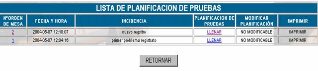
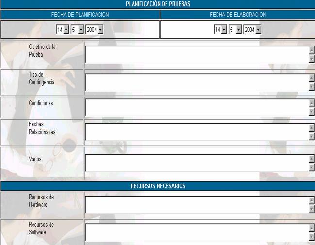
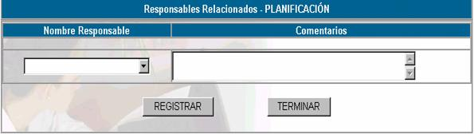

PLANIFICACIÓN
La planificación de pruebas es un ejercicio que debe ser incluido en el POA, durante el primer año de implementación del Plan se planificará una prueba para todas las aplicaciones y módulos del SFI considerados críticos para el negocio, a partir del segundo año se definirán pruebas semestrales, esta opción muestra la siguiente pantalla

Donde
N° de orden de mesa; especifica el orden de mesa enviado por el cliente
Fecha y hora; especifica la fecha y hora en la que se realizó el envío de la orden de mesa
Incidencia; especifica la descripción de la incidencia a la cual se le tiene que dar solución.
Para realizar la planificación de pruebas haga click en el vinculo
LLENAR y aparecerá la siguiente pantalla
Fecha de Planificación; anote la fecha de elaboración del Plan que corresponda en forma Interna a la US, esta planificación deberá ser aprobada por el OCN (Oficial de Continuidad de la Mutual. Se puede hacer la planificación anual y someter a una sola aprobación.
Fecha de Aprobación; se anota la fecha de aprobación del OCN.
Objetivo de la Prueba; se deberá describir el objetivo mismo de la realización de la Prueba considerando los cambios tecnológicos, cambios de equipos, implementación de nuevas aplicaciones, cambio de personal y otros fines.
Tipo de Contingencia; se especificará el tipo de daño o interrupción simulada pudiendo ser:
Condiciones; se definirá para la contingencia definida en el punto anterior las condiciones del entorno físico y humano, por ejemplo robo del servidor, ausencia del responsable de servidores y no disponibilidad de los instaladores de sistema operativo propios de la Mutual.
Fechas Relacionadas; se especifica la Fecha y hora de la contingencia, el tiempo que se tiene para restablecer los servicios con el plan de contingencias y la Fecha en la cual se deberá comunicar al OCN para la prueba del Plan de Continuidad de la Mutual. En casos donde las condiciones especifiquen este escalamiento.
Varios; anote los aspectos no considerados en el plan.
Recursos de hardware; anote los servidores, terminales, equipos de telecomunicación, cables de red, conectores, concentradores, routers, switch, etc.
Recursos de Software; anote los Instaladores de software base, aplicaciones, herramientas, etc.
Recursos de Respaldo; anote los recursos de respaldo por ejemplo Bases de datos.
Facilidades; instalaciones, impresoras, teléfonos, etc.
Costo aproximado; en función de las condiciones se deberá estimar el costo de la prueba.
Presione registrar y continuar para asignar responsables de planificación

Nombre responsable;
asigne a los responsables de la planificaciónComentario; coloque los comentarios correspondientes a los responsables.
Usted puede modificar la planificación una vez llenados los datos haciendo click en MODIFICAR y los puede imprimir haciendo click en IMPRIMIR